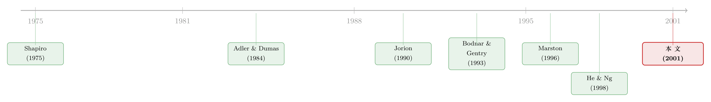

汇率砸下来，砸疼谁？要看对面站着谁
本文读的是 Williamson (2001, Journal of Financial Economics)：作者把汇率敞口 (exchange rate exposure) 放进一个具体行业——美日汽车业——来测量，发现敞口不仅显著，而且随时间变化；而这种变化的根子，是行业竞争结构在变。一句话，汇率冲击有多疼，取决于你对面站着谁、你的车和他的车有多像。
1 一个憋了二十年的尴尬
先说一件让金融学界有点下不来台的事。
理论上，这件事本该再清楚不过：一家做出口生意的跨国公司，收入用外币计、成本用本币计，那么外币一贬值，它换回家的现金流就该缩水，公司价值就该跟着掉。这就是所谓的汇率敞口 (exchange rate exposure)。1973 年布雷顿森林体系崩溃之后，汇率——无论是名义的还是实际的——一路剧烈起伏，按理说，应该能在公司股价上留下一道道清晰的指纹。
可问题来了。一批又一批的实证研究去股价里找这道指纹，找到的却是若有若无。要么系数不显著，要么显著的公司寥寥无几，要么这家公司是正、那家公司是负，乱成一团。Jorion (1990) 看了 287 家美国跨国公司，Amihud (1994) 看了 32 家大出口商——结论一个比一个含糊。于是一个让人坐立不安的问题浮出水面：
到底是「偏离购买力平价」这件事，对全球竞争者根本就不重要？还是说，我们手里的尺子量错了？
这篇论文，就是冲着「尺子量错了」这个方向去的。而它给出的答案，比「换一把尺子」要深刻得多——它说，你之所以量不准，是因为你漏掉了一个人：竞争对手。
2 为什么以前量不准：被「贸易加权」抹平的冲击
先看看以前的尺子错在哪。
过去的研究有一个几乎统一的做法：用贸易加权汇率 (trade-weighted exchange rate)——也就是把一篮子货币加权平均成一个指数——去回归公司收益。听上去很合理，毕竟一家跨国公司做的是全球生意，对单一货币的敞口似乎不如对「一篮子货币」的敞口有意义。
但这恰恰是问题所在。作者指出，这种加总会把单个汇率冲击的效果互相抵消、磨平。想象一下：日元升值对一家美国车企是利好（日本对手变贵了），同时德国马克升值可能是利空（欧洲业务换算受损）。当你把日元、马克、英镑全揉进一个指数里，一正一负，净效果就被稀释成了一团模糊的噪声。理论的预测本来是针对具体货币的（currency-specific），你却用一个混合指数去检验它，自然南辕北辙。
这是全文第一个关键的方法论选择：不要贸易加权指数，要单一货币。美国车企对日元的敞口、对马克的敞口，要分开来测，因为它们背后站着的是不同的对手、讲的是不同的故事。
接着，一个更自然的问题是：既然要看单一货币、看具体对手，那为什么不干脆把研究收缩到一个行业里去？
3 为什么选汽车业：一间天造地设的实验室
作者挑了汽车业，这个选择本身就是论文的一半功力。
为什么是汽车？因为它几乎是为这个理论量身定制的实验室。第一，它出口比重高、国际竞争激烈，零部件进口和成品出口都高度依赖海外，对汇率天然敏感。第二，也是更妙的一点——汽车业在样本期内经历了一场清晰的产业演化：从北美的「国别竞争」，到美日车企互相出口的「国际竞争」，再到大家满世界设厂的「全球竞争」。这正好给「敞口会随竞争结构而变」这个命题，提供了一段天然的时间轴。
样本的选取也透着讲究。作者只留下美国和日本的车企，因为这两国车企控制了全球汽车业绝大部分可竞争现金流 (contestable cash flows)——也就是那些没有显著外资进入壁垒的现金流。法国、意大利、瑞典的车企？要么有政府保护、要么干脆国有，股票没有全程公开交易，剔除。德国车企？因为在样本期大部分时间里没有面临实质性竞争，也剔除。
留意这个剔除逻辑：它不是为了让样本「干净好看」，而是直接服务于核心命题——只有那些真正在同一个市场里短兵相接的公司，竞争才会真正写进它们的汇率敞口里。
4 识别策略：把「竞争」请进回归方程
现在我们来到论文的骨架。作者想测的，到底是什么？
4.1 从公司价值到利润的导数
一切从公司价值对汇率的敏感度开始。作者把公司价值的变化写成下面这个关系（论文 Eq. 1）：
$$ \frac{dV}{dS} = \frac{1-\tau}{\rho}\,\frac{d\pi}{dS} $$
这里 \(V\) 是公司价值，\(S\) 是即期汇率 (spot exchange rate)，\(\tau\) 是税率，\(\pi\) 是公司利润，\(\rho\) 是贴现率。作者做了一个明确的假设：贴现率和税率都是常数，利润预期是静态的，即 \(E(\pi)=\pi_t\)。
这个式子虽然简单，意思却很硬：既然税率和贴现率被钉死成常数，那么公司价值对汇率的全部敏感性，就浓缩在「利润对汇率的导数」\(d\pi/dS\) 上。换句话说，研究汇率敞口，本质上就是研究汇率怎么动了公司的利润。
那 \(d\pi/dS\) 又由什么决定？这正是 Marston (1996) 模型登场的地方。
4.2 Marston 模型：垄断者 vs. 古诺竞争者
Marston 的模型告诉我们一件反直觉的事。
设想一个垄断车企，在国内外都有销售、都有成本。Marston 证明，这家垄断者的敞口只由它的净外币收入 (net foreign revenue) 决定，而产品的需求弹性并不重要。为什么？因为垄断者有定价权：本币一贬值，它直接把价格提上去，把成本的上升转嫁给消费者（高 pass-through），于是汇率冲击被它自己消化掉了，敞口小到几乎测不出来。这恰好印证了 Bodnar et al. (1998) 的发现：转嫁能力强的行业，敞口反而低。
但真正有意思的，是面临古诺竞争 (Cournot competition) 的情形。两个国家、两家公司，各自在本国生产一种异质化产品，然后都在两个市场里卖。这时候，本国公司的利润不再只取决于它自己的净外币收入，还取决于它自己产品的价格弹性，以及它与对手之间产品的交叉弹性 (cross elasticities)。产品越是可替代，弹性越高，敞口越大。
直觉是什么？当对面站着一个对手，你就不敢随便涨价了——你一涨价，客户就跑到对手那边去。转嫁能力被对手摁住了，于是汇率冲击只能由你自己的现金流来扛。所以：
古诺竞争者的敞口，必然大于垄断者。这个更大的敞口，一来源于更低的价格转嫁，二来源于它更难对冲——因为你的敞口竟然是「对手的行为」的函数，而对手是你管不着的。
这就把「竞争」从一个抽象概念，变成了敞口大小的直接决定项。也顺手推出了一个可检验的预测：高出口、高可替代性的行业，应该表现出更大的汇率敞口——而汽车业，正是这样的行业。
4.3 落到可估计的方程
理论讲完，怎么落到数据上？作者用了下面这个回归（论文 Eq. 2）。这是全文的实证核心，我们把它逐项拆开：
这里 \(r_{j,t}\) 是国别行业组合或公司 \(j\) 在 \(t\) 期的实际股票收益，\(\Delta S_{kt}\) 是第 \(k\) 国实际汇率的变化率，\(b^e_k\) 衡量的就是该组合对第 \(k\) 国货币的敞口。
有三个细节值得停下来看：
其一，方程里多了一个 \(R_{m,t}\) 市场因子。这一步偏离了经典的 Adler and Dumas (1984)，向 Jorion (1990) 靠拢——把大盘波动先剥离掉，剩下的才是「干净的」汇率敏感性。
其二，符号的方向是有预言的。因为汇率是相对本国报价的，本币贬值（外币升值）应当抬高本国出口企业的价值，所以对出口导向型公司，直接敞口的系数预期为负。但在前面讲过的「第三国竞争」「海外设厂」等情形下，系数也可能转正——这恰恰是论文后面那些反转结果的伏笔。
其三，作者用了似乎不相关回归 (seemingly unrelated regression, SUR)，也就是 Zellner (1962) 那套方法。为什么？因为即便控制了市场因子，同一国家内部不同公司、不同组合的残差之间，仍可能存在横截面相关。SUR 能把这种相关性吸收进估计，提高效率；而且它还允许你去检验不同组合、不同公司之间系数是否相等——这对后面比较美、日车企敞口差异至关重要。如果残差之间根本没有相关，SUR 就退化成普通最小二乘 (OLS)，不亏。
5 数据：一把月度的、实际的尺子
数据这一节，作者的每个选择都在为「测准」服务。
收益、汇率、价格水平，全部来自 Datastream International。实际汇率（而非名义汇率）由各国的月度批发价格指数 (Wholesale Price Index) 平减名义汇率得到——因为只有实际汇率变化（即偏离 PPP 的那部分）才会真正影响公司的实际价值；纯名义的汇率变动若被各国物价同步抵消，对实际价值毫无影响。
为什么用月度收益？因为平减用的价格水平本就是月度观测的，频率必须对齐；而且月度数据还能规避非同步交易 (nonsynchronous trading) 的麻烦。汇率和总收益指数都取在每月 15 日，为的是避开月末各国宏观数据公布带来的端点效应。
样本期是 1973 年 1 月到 1995 年 12 月，跨度 23 年，正好覆盖了汽车业从国别竞争走向全球竞争的全过程。组合用等权 (equally weighted)——因为关心的是「平均」敞口水平，而非被巨头主导的加权敞口。公司的销售与产量数据则来自 Ward's Automotive Yearbook、日本汽车工业协会，以及记录美国车企海外业务沿革的 Notable Corporate Chronologies。
顺带提一个被作者写进 Table 1 Panel A 的隐患：马克兑日元、马克兑美元、日元兑美元这几对实际汇率之间相关性很高（美元基本是同向地对各主要货币波动）。高相关意味着把日元兑美元和马克兑美元一起放进回归时，会有共线性，推高标准误、压低 t 值。这是后面解读系数时要时时记挂的一根刺。
6 主要结果：敞口是真的，而且会「变脸」
现在揭晓那些憋了二十年的指纹，到底有没有显形。
第一，敞口显著存在。 在 1973–1995 的样本里，美日汽车业都表现出统计上显著的汇率敞口。理论预测的「应该有」，这一次终于在数据里「真的有」。
第二，也是最关键的一步——敞口随时间变化，而且变化的节奏与产业结构同步。 美元兑日元的敞口，对美、日双方车企都很强；而把样本切成不同时期后，敞口的大小随之改变。作者的论断很硬气：这是文献里第一次把汇率敞口的变化，明确地与产业结构的演化联系起来。在汇率发生大幅、持续波动的时期，以及行业竞争相对激烈的时期，估计出的敞口都更强。日本车企这一侧的发现，还与 He and Ng (1998) 对日本运输板块的结论一致。
第三，一个漂亮的反转：美国车企竟然从马克贬值中受益。 这听上去不太对——按出口逻辑，外币贬值不该是利空吗？但作者给的解释合情合理：美国车企在欧洲有运营和收入，当马克相对美元贬值时，它们一方面从欧洲业务里获益，另一方面更重要的是——它们的非德国对手在那一刻竞争力受损。这正是前面 Marston 模型里「第三国竞争」那一幕的现实版：汇率一动，对一家是损失，对另一家却是竞争性的红利，敞口的符号由竞争得失决定，而非简单的收入换算。
第四，敞口的来源被定位到了「日本在美销售」。 作者通过考察各车企在美、日、德三国的市场份额，去拆解敞口的成因。结论是：美国车企对日元的敞口、以及日本车企对美元的敞口，主要都来自日本车在美国市场的销售。一个具体的汇率—具体的市场—具体的对手，三者扣在一起，敞口才显形。这印证了那个朴素却屡屡被加总数据淹没的判断：公司的货币敞口，是它在特定市场里出口销售与所遇竞争的函数。
第五，外销提高敞口，海外生产降低敞口。 作者专门拿日本车企，去看「海外销售/总销售」之比与「海外生产」对敞口的影响。结果干净利落：外销越多，敞口越大；而海外生产则是一种有效的经营性对冲 (operational hedging)——把工厂搬到海外市场去，让成本也用当地货币计价，外币一贬值，收入缩水的同时成本也缩水，两边对冲，本币现金流的敏感度自然下降。
把这五点串起来看，论文其实只讲了一个核心故事：汇率冲击的疼痛程度，不是公司一个人的事，而是它和对手「合演」的结果。你卖多少外销决定了敞口的「量」，你对面站着谁、你的车和他的车多像，决定了你能不能把这份疼痛转嫁出去。竞争结构一变，敞口就跟着变脸——这就是为什么过去用静态、加总的尺子，永远量不准它。
（关于「把外汇风险当成一台内部对冲机器来管理」这条线，可参见《对冲，不是一道选择题，而是一台『内部汇率』机器》；关于企业到底用衍生品对冲掉了多少，可参见《公司到底用衍生品对冲了多少风险？》。）
7 文献脉络：从「净外币收入」到「对手的脸」
把这篇论文放回它生长的那条藤上，逻辑就更清楚了。
最早的源头是 Shapiro (1975)，他用一个两国模型分析寡头垄断厂商的利润最大化策略，第一次点明：影响跨国公司汇率风险的，是出口比重、它在国内面临的竞争程度，以及本地与进口要素之间的可替代性。这其实已经埋下了「竞争决定敞口」的种子，只是后来很长一段时间被人忽略了。
接着是测量的奠基。Adler and Dumas (1984) 给了「敞口」一个干净的定义——资产价值对实际汇率变化的敏感度，并把它落成一个可回归的形式。Jorion (1990) 顺着这条路，实证了美国跨国公司敞口的横截面与时间变异，并指出海外销售比率是敞口的显著决定因素。
然后是一段集体的困惑。Bodnar and Gentry (1993) 用美、日、加三国的行业数据，发现只有 20–35% 的行业有显著敞口；Bartov and Bodnar (1994) 则诚实地点出问题——同期汇率效应太弱，于是改用滞后收益对季度汇率的响应，才勉强测出更强的效应。He and Ng (1998) 用 171 家日本跨国公司，发现 25% 的公司有经济上显著的敞口，集中在电气机械、精密设备和运输板块。这些研究都在反复确认：敞口确实存在，但用现成的尺子，它总是若隐若现。

真正的转折点是 Marston (1996)。他论证：行业里展开的竞争类型，会影响行业内公司的经济敞口；产业结构一变，经济敞口也该跟着变。这就把 Shapiro 那颗被埋了二十年的种子，重新刨了出来，并给了它一个清晰的理论形态。
而 Williamson (2001)，正是站在 Marston 肩膀上的那个实证落地者。它做了三件前人没合起来做的事：用单一货币而非贸易加权指数；钉在一个竞争清晰、结构在演化的行业里；并第一次把敞口的时间变异和产业结构的演化直接绑在一起。一句话，它把「对手的脸」正式请进了汇率敞口的回归方程。
8 评论与延伸（Q&A + 研究方向）
(a) 几个可能的疑问
Q：单一货币、单一行业，是不是把样本搞得太小、太特殊，结论难以外推？
这是「干净识别」与「外部有效性」之间的经典权衡。作者主动选择了前者：汽车业之所以被挑中，恰恰因为它竞争结构清晰、演化路径明确，是检验「竞争决定敞口」这一机制的理想实验室。代价是，结论能否推广到竞争结构模糊的行业，本文给不出直接答案——它证明的是「机制存在」，而非「机制普适」。
Q：既然实际汇率之间高度相关、共线性会推高标准误，那些「显著」的系数还可信吗？
作者自己在 Table 1 里就坦承了这根刺。共线性的方向是保守的——它压低 t 值、让显著性更难得到，所以测出来的显著敞口，若有偏，更可能是被低估而非被夸大。这一点上，结果的「显著」反而更让人放心。但跨货币系数的相对大小仍需谨慎解读。
Q：用股票收益当公司价值的代理，测出来的到底是「真实经营敞口」还是「市场的看法」？
严格说，是后者，但这正是 Eq.(1) 那套框架想要的。作者明确指出，回归测的是净敞口 (net exposure)——是公司做完各种对冲（无论用衍生品还是用经营手段）之后残留的那部分敏感度。所以「海外生产降低敞口」这一发现，本质上是市场看到了经营性对冲、并把它定价进了股价。这恰恰是优点而非缺陷。
Q：敞口随时间变，会不会只是「估计噪声」在不同子样本里的随机起伏，而非真有结构性变化？
这是最值得追问的一点。作者的辩护是「相关性证据」：敞口变强的时点，与汇率大幅持续波动、行业竞争加剧的时点系统性地对得上；日本侧的结果又与 He and Ng (1998) 独立印证。这构成了一条说得通的证据链，但它终究是关联而非因果——论文并没有一个外生冲击把「竞争结构变化」干净地从「汇率波动本身」里剥离出来。
Q：为什么垄断者的敞口反而测不出来？这不反直觉吗？
关键在价格转嫁。垄断者有定价权，本币一贬值就直接涨价，把冲击转嫁给消费者，于是它的现金流几乎不受汇率扰动，敞口小到测不出。Bodnar et al. (1998) 也证实：高转嫁行业，低敞口。真正扛汇率风险的，是那些不敢涨价的竞争者——它们头顶悬着对手这把刀。
Q：为什么剔除德国车企？这会不会是一种「为了结果好看」的样本筛选？
不是。剔除德国车企的理由与核心命题自洽：在样本期大部分时间里，德国车企没有面临实质性竞争。既然论文要测的是「竞争如何写进敞口」，那么把一个长期不在竞争场里的玩家放进来，只会引入噪声、模糊机制。这是出于识别逻辑的剔除，不是出于美化结果的剔除。
(b) 几个可能的研究问题与提案
1. 把「竞争—敞口」机制搬到公司债与信用利差上。
【经济故事】股票敞口测的是「净现金流的方向」，但债权人关心的是「现金流会不会跌破还本付息线」。汇率冲击在竞争激烈、转嫁能力弱的行业里更疼，那么这些行业的公司在本币升值期，信用利差是否会系统性走阔？竞争结构应当同时是股票敞口和信用风险的共同驱动。 【可行性】中。需要 TRACE 级别的公司债成交数据 + 行业层面的进口渗透率/HHI + 实际汇率。识别上可借鉴本文的「具体货币—具体市场」拆解，按行业可替代性分组做异质性检验。难点在于把汇率冲击从一般信用周期里干净剥离。
2. 用外资持有人结构，给「谁在为汇率敞口定价」做一次解剖。
【经济故事】本文测的是市场的整体看法，但市场是由不同投资者构成的。如果一家车企的敞口主要来自「日本车在美销售」，那么持有它的外资机构（尤其是熟悉对手市场的那些）是否比本土投资者更早、更准地把这份敞口定价进去？这能把「敞口被定价」拆成「被谁定价」。 【可行性】中。需要 13F/国际持仓数据 + 公司层面敞口估计。可用外资持股比例的外生变动（如指数纳入、可投资度改革）做识别。挑战在于敞口估计本身有噪声，叠加持仓数据会放大测量误差。
3. 用海外建厂的「准自然实验」，干净识别经营性对冲的效果。
【经济故事】本文发现「海外生产降低敞口」，但建厂决策是内生的——可能正是那些预期敞口要变大的公司才去建厂。如果能找到一批由关税政策、贸易摩擦或东道国补贴外生触发的建厂事件，就能把经营性对冲的因果效应从内生性里抠出来。 【可行性】中偏低。事件清晰但数量稀少，汽车业全球建厂是低频大事件，样本量是硬约束。识别干净但统计功效堪忧，或需扩展到更多制造业行业。
4. 把单一货币的思路推到「供应链货币错配」上。
【经济故事】本文强调收入端的货币，但汽车业的零部件进口同样高度国际化。一家车企真正的敞口，应是收入货币篮子与成本货币篮子之间的错配。当两个篮子越不匹配，敞口越大——这是对 Marston 框架的一个自然延伸。 【可行性】高。如今有了海关层面的进出口微观数据，可以为单个公司构造收入端和成本端的货币篮子。识别上属于横截面解释，难度可控，是一个 doable 的方向。（与此相关的「销售版图决定借钱用哪种货币」的思路，可参见《你的债，说哪国话？》。）
9 我的判断
先说贡献。这篇论文最漂亮的地方，不在于它又测出了一个显著的系数，而在于它重新定义了「测什么」。它告诉你：汇率敞口从来不是一个静态的、公司层面的常数，而是一个随产业竞争结构呼吸的、动态的量。过去二十年实证结果的「弱而不稳」，未必是理论错了，而是大家一直用一把静态、加总的尺子，去量一个动态、具体的东西。把研究收缩到一个竞争结构清晰可辨的行业，再用单一货币去切，这种「以小见大」的方法论自觉，是它真正的传世之处。
再说对识别的担忧。最大的软肋是「时间变异」这一核心发现，靠的是关联证据而非因果识别。作者把「敞口变化」与「竞争结构演化」对到了一起，但并没有一个外生冲击，能把竞争结构的变化从汇率波动本身、从行业基本面的其他变化里干净地剥离出来。换句话说，我们看到了一条说得通的故事线，却还缺一个能一锤定音的实验。其次，实际汇率之间的高共线性，虽然方向上是保守的，但也让跨货币系数的相对解读变得脆弱。
最后说后续想看到什么。我最希望看到的，是把这套「竞争决定敞口」的逻辑，从股票搬到信用市场去——因为债权人对「现金流跌破阈值」的非线性关切，会让竞争结构的作用以一种更尖锐的方式显形。再往前一步，是用今天才有的海关级供应链数据，把敞口重新定义为收入货币与成本货币之间的错配，那将是对 Marston 框架一次真正现代化的实证检验。汽车业这间实验室，二十多年后，或许值得用一把更锋利的尺子再走一遍。
参考文献
- Adler, M., Dumas, B. (1984). Exposure to currency risk: definition and measurement. Financial Management 13, 41–50.
- Amihud, Y. (1994). Exchange rates and the valuation of equity shares. In: Amihud, Y., Levich, R.M. (Eds.), Exchange Rates and Corporate Performance. Irwin, New York.
- Bartov, E., Bodnar, G. (1994). Firm valuation, earnings expectations, and the exchange rate exposure effect. Journal of Finance 49, 1755–1785.
- Bodnar, G., Dumas, B., Marston, R. (1998). Pass-through and exposure. Unpublished Working Paper, University of Pennsylvania.
- Bodnar, G., Gentry, W. (1993). Exchange rate exposure and industry characteristics: evidence from Canada, Japan, and the USA. Journal of International Money and Finance 12, 29–45.
- He, J., Ng, L. (1998). The foreign exchange exposure of Japanese multinational firms. Journal of Finance 53, 733–754.
- Jorion, P. (1990). The exchange rate exposure of U.S. multinationals. Journal of Business 63, 331–345.
- Marston, R.C. (1996). The effects of industry structure on economic exposure. Unpublished Working Paper WP96-3, University of Pennsylvania.
- Shapiro, A.C. (1975). Exchange rate changes, inflation, and the value of the multinational corporation. Journal of Finance 30, 485–502.
- Williamson, R. (2001). Exchange rate exposure and competition: evidence from the automotive industry. Journal of Financial Economics 59, 441–475.
- Zellner, A. (1962). An efficient method of estimating seemingly unrelated regressions and tests of aggregation bias. Journal of the American Statistical Association 57, 348–368.